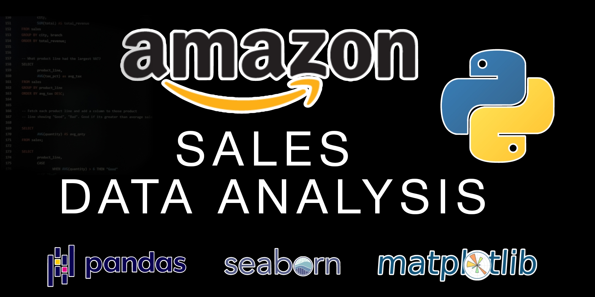

Built a predictive model using Selenium, Pandas, and Linear Regression
to forecast final standings of the 2024/25 Premier League.
Includes insights on top finishers, relegation risks, and performance metrics.

In this project we use SQL Server to explore global COVID 19 data.
Transformed raw housing data in SQL Server for streamlined analysis and improved data usability.
Tableau Dashboards for projects on COVID-19 data visualizations and trend analysis.
In this project we look at what variables affect the gross revenue from movies using Python.
Predicted 2024/25 EPL standings using Python, Selenium, and Linear Regression. Achieved a 0.80 MSE; Liverpool led with 91.72 points.

Analyzed 10,000+ Amazon sales transactions using Python and Pandas to uncover key insights in fulfillment, returns, and regional sales. Delivered dashboards to optimize inventory, marketing, and business strategy.